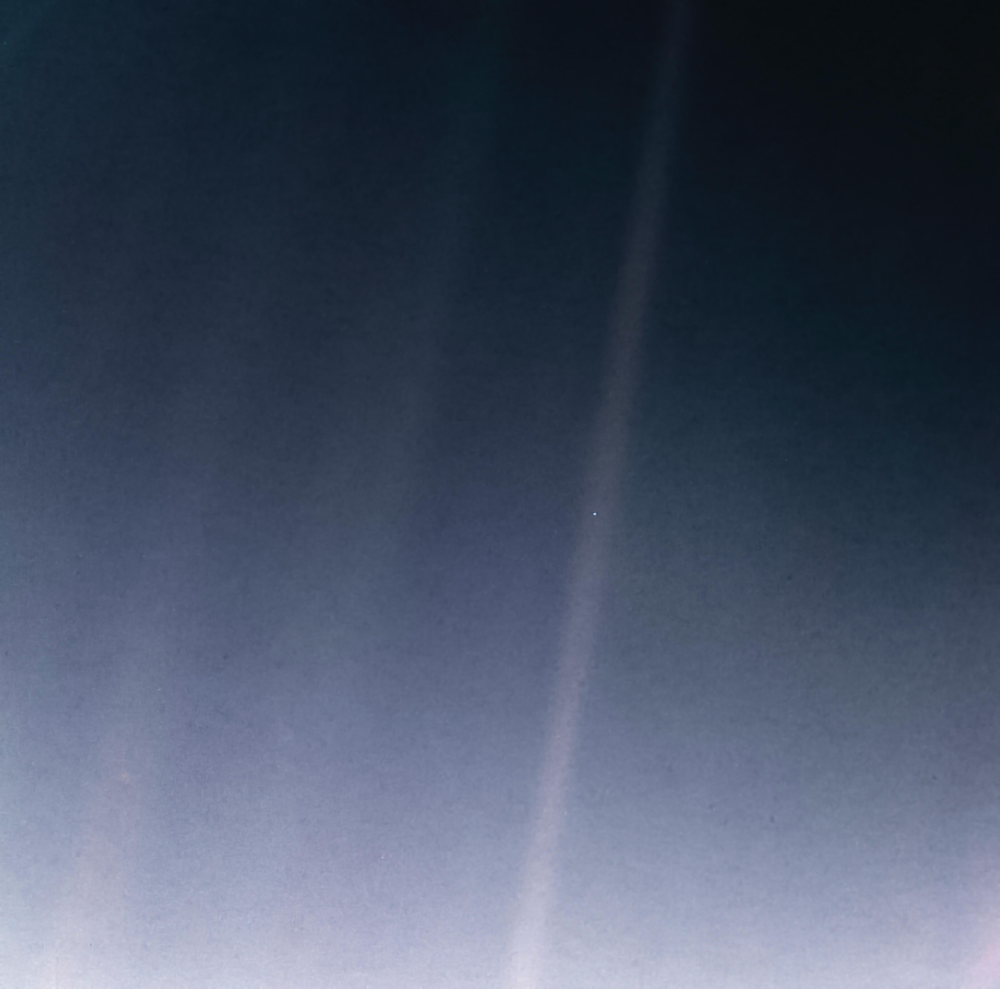
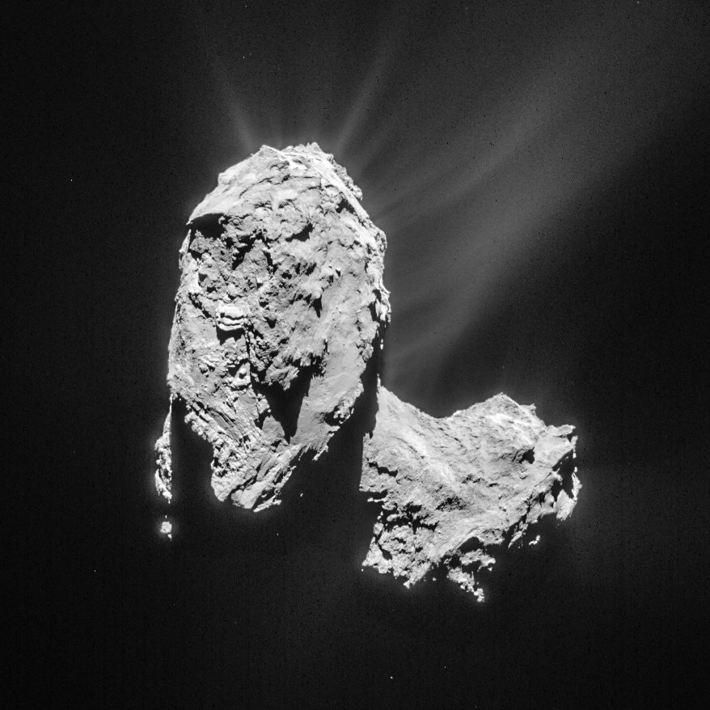
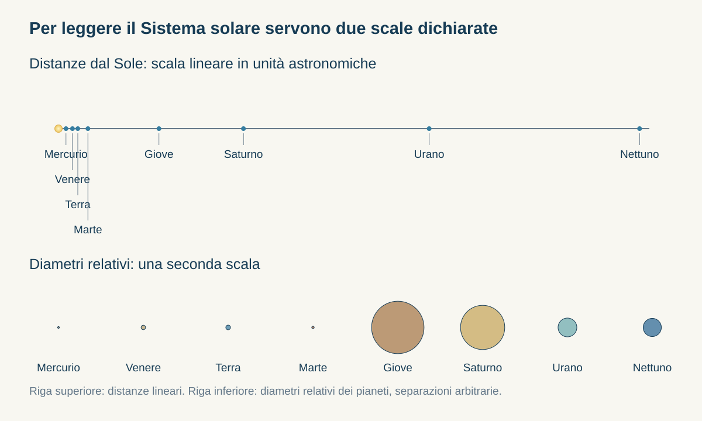

Una famiglia tenuta insieme dalla gravità
Una sera Giove può sembrare una luce immobile fra le stelle. Tornando a osservarlo settimane dopo, la sua posizione sullo sfondo è cambiata. La parola «pianeta» conserva la storia di questi astri erranti, ma oggi la spiegazione non si limita al loro comportamento apparente: sappiamo che appartengono a un sistema di corpi legati gravitazionalmente al Sole. La Terra è uno di quei pianeti, e il nostro punto di vista si muove insieme a essa.
Il Sistema solare comprende una stella, otto pianeti, pianeti nani, satelliti, asteroidi, comete e molti corpi più piccoli, insieme a polveri e gas. Elencare questi membri è soltanto il primo passo. Per comprenderli bisogna confrontare dimensioni, masse, distanze e processi. Un oggetto brillante non è necessariamente grande; un oggetto lontano non è necessariamente piccolo; il numero di fotografie disponibili dipende anche dalle missioni che lo hanno visitato.
Il Sole contiene la grande maggioranza della del sistema e ne domina la dinamica, ma non è un punto fisso assoluto. I corpi si muovono rispetto a centri di massa comuni. Per molte spiegazioni introduttive possiamo rappresentare un pianeta intorno a un Sole quasi fermo, purché sia chiaro che questa è un’approssimazione. Non trasformare il centro di una figura nel centro universale di ogni movimento.
Il sistema non è una fila di sfere sospese a distanze regolari. I pianeti si trovano su orbite, con posizioni che cambiano. Una tavola con tutti i corpi allineati è un inventario visivo, non una fotografia istantanea delle loro posizioni. Se non dichiara la scala, può essere corretta nei nomi e ingannevole nelle dimensioni o nelle distanze.
Otto pianeti, differenze che contano
In ordine crescente di distanza orbitale media troviamo Mercurio, Venere, Terra, Marte, Giove, Saturno, Urano e Nettuno. I primi quattro sono pianeti terrestri o rocciosi: hanno superfici solide e sono relativamente piccoli. Questo non li rende copie della Terra. Atmosfera, acqua, temperatura, rotazione e storia geologica producono ambienti molto diversi, che la prossima lezione confronterà senza ridurli a quattro fotografie dello stesso tipo.
Giove e Saturno sono giganti gassosi, ricchi di idrogeno ed elio. Urano e Nettuno sono giganti ghiacciati: il nome distingue la loro composizione complessiva, non descrive una superficie su cui si pattina. Negli interni di questi pianeti pressioni e temperature sono molto diverse da quelle di un congelatore; i materiali comunemente chiamati «ghiacci» in astronomia possono trovarsi in altre condizioni fisiche.
La superficie di un gigante non è un terreno simile a quello terrestre. Quando leggiamo un raggio o una di riferimento, dobbiamo sapere a quale livello convenzionale dell’atmosfera si riferiscono. Un semplice confronto «temperatura superficiale dei pianeti» può mescolare suolo, nubi e livelli atmosferici diversi. La tabella diventa didattica soltanto se le grandezze hanno significati confrontabili.
I satelliti orbitano intorno a pianeti e anche a corpi minori; non sono tutti sfere inerti. Alcuni hanno atmosfere, oceani interni o attività geologica. Anelli e lune saranno trattati insieme perché mostrano strutture, risonanze e interazioni gravitazionali. Il numero di satelliti conosciuti cambia con le scoperte: un conteggio stampato in un manuale deve essere accompagnato da una data, non trattato come una proprietà immutabile.
Plutone e le categorie: classificare non significa giudicare
Nel Sistema solare, la definizione di pianeta considera il moto intorno al Sole, una forma approssimativamente arrotondata dalla propria gravità e il predominio dinamico nella regione orbitale. I pianeti nani condividono alcuni criteri, ma non l’ultimo; non sono satelliti. La distinzione non assegna importanza scientifica. Plutone resta un mondo interessante e studiato, pur essendo classificato come pianeta nano.
«Ripulire la propria » non significa svuotarla di ogni granello. La Terra incontra polveri e ha oggetti che condividono parti della sua regione orbitale. Il criterio riguarda il ruolo dinamico dominante, non la sterilità dello spazio. Allo stesso modo, un pianeta nano non è necessariamente un pianeta giovane che diventerà maggiore crescendo: la categoria non è una tappa obbligata dell’età.
Per asteroidi e comete composizione, attività e storia sono più utili di una separazione eccessivamente rigida fra «rocce» e «palle di neve». Alcuni corpi hanno comportamenti intermedi. Le etichette organizzano la conoscenza, ma i dati possono mettere in evidenza continuità e casi particolari. Quando una classificazione viene aggiornata, chiedi quale criterio è cambiato e quali misure lo sostengono.
Una scoperta rende automaticamente un oggetto il nono pianeta?
No. Un nuovo corpo deve essere caratterizzato e confrontato con i criteri pertinenti. Una notizia può usare «pianeta» in modo informale o riferirsi a un’ipotesi dinamica. Prima di aggiungerlo all’elenco, verifica che esistano osservazioni, una descrizione scientifica e una classificazione consolidata.
L’unità astronomica: un righello adatto alla famiglia
Scrivere distanze planetarie in chilometri produce numeri molto grandi. L’unità astronomica, abbreviata UA, offre un riferimento familiare: è vicina alla distanza media Terra–Sole. Oggi è definita esattamente come 149.597.870.700 metri. La definizione convenzionale non implica che la Terra resti sempre a quella distanza: la sua orbita è ellittica.
Per confrontare orbite si usa spesso il semiasse maggiore, una misura geometrica dell’ellisse. Non è la distanza attuale di un pianeta dal Sole né la distanza del pianeta dalla Terra. Giove può trovarsi nella stessa direzione generale della Terra oppure dalla parte opposta del Sole, e la distanza fra noi e il pianeta cambia. Una tabella di semiassi non fornisce da sola la durata di un segnale verso Giove quel giorno.
Le distanze crescono molto: Marte è intorno a una volta e mezza il riferimento terrestre, Giove a poco più di cinque, Nettuno a circa trenta. La parte esterna non consiste in piccoli intervalli aggiunti dopo una lunga lista interna. Costruire un modello fisico rende immediata questa differenza: Mercurio, Venere, Terra e Marte si raccolgono vicino al Sole, mentre gran parte dello spazio serve ai pianeti esterni.
Scegli quanti metri assegnare alla distanza Terra–Sole nel modello. Leggi quanto lontani finirebbero gli altri pianeti e immagina di percorrere quelle distanze a piedi.
Osserva, confronta, riconosci


Separa la forma solida del nucleo dal materiale diffuso liberato nelle zone attive.
ESA/Rosetta/NAVCAM · CC BY-SA IGO 3.0.Una famiglia legata dalla gravità
Prima scegli un confronto. Poi osserva che cosa cambia e collega l’effetto alla spiegazione.
Il modello richiede JavaScript; il principio e le immagini restano leggibili.
Modello didattico originale AD ASTRA: semplificazioni dichiarate nella figura. Il movimento, quando disponibile, parte solo su richiesta.
Apri il confronto numerico precedente · facoltativo
Costruisci un Sistema solare che puoi percorrere
Le posizioni sono distanze dal Sole basate su semiassi maggiori arrotondati, non coordinate del giorno. I diametri usano la stessa scala lineare delle distanze: osserva quanto diventano piccoli. Non disporre il modello su strade o luoghi pericolosi; scegli uno spazio accessibile e adatto.
Se 1 UA vale cinque metri, la Terra occupa una posizione a cinque metri dal Sole del modello, ma il suo diametro è inferiore a mezzo millimetro. Un’illustrazione che disegna una Terra larga diversi centimetri in quello stesso modello ingrandisce i corpi rispetto alle distanze. Può essere utile per riconoscerli, ma deve dirlo. Una legenda onesta è parte della spiegazione scientifica.
Una Terra quasi senza dimensione: leggere Voyager
Ritrova la fotografia commentata e i suoi riferimenti ↑
Questa immagine offre una lezione diversa da una fotografia ravvicinata. La Terra è un mondo intero, ma alla distanza e con l’ottica della sonda appare come un punto. Il file può avere molti pixel senza mostrare continenti: ingrandire lo schermo non aggiunge informazione che lo strumento non ha registrato. La risoluzione dipende da dimensione angolare, ottica, rivelatore e condizioni della ripresa.
La scena è anche un esercizio di interpretazione. Una banda di luce suggestiva può sembrare un raggio che attraversa lo spazio vicino alla Terra; il contesto strumentale mostra che è un effetto nell’ottica. Non basta l’aspetto evocativo per stabilire l’origine di una struttura. Le immagini scientifiche sono più interessanti, non meno, quando impariamo a distinguere oggetto, misura ed effetto strumentale.
Scala dello spazio e scala del tempo
Un segnale radio viaggia nello spazio alla velocità della luce. Una comunicazione con una sonda non è istantanea: maggiore è la distanza, maggiore è il ritardo. Se il segnale deve andare e tornare, il tempo minimo comprende entrambe le tratte. La durata effettiva di un dialogo può includere anche elaborazione, pianificazione e vincoli di trasmissione.

Un’ corrisponde a poco più di otto minuti luce. Questo non significa che ogni pianeta a un semiasse di cinque UA sia sempre a cinque UA dalla Terra. Prima scegli le estremità del percorso. Il Sole–pianeta e la Terra–sonda sono distanze differenti. È la stessa attenzione ai riferimenti che ha permesso di distinguere mese siderale e sinodico.
Il tempo orbitale, invece, è legato alla gravità e alla dimensione dell’orbita. Pianeti più esterni impiegano in generale più tempo a completare una rivoluzione. Nella lezione sulle leggi di Keplero costruiremo una relazione quantitativa. Per ora conserva la distinzione: il tempo della luce descrive un viaggio di informazione, il periodo orbitale un moto gravitazionale.
Il Sistema solare non finisce al bordo di un disegno
Oltre Nettuno si trovano numerosi corpi transnettuniani. La fascia di Kuiper e altre popolazioni non sono un muro; descrivono regioni e famiglie orbitali. La nube di Oort è un’ipotesi ben motivata sul grande serbatoio di molte comete di lungo periodo, non una sfera fotografata integralmente. Le evidenze e il modo di rappresentarla sono diversi da quelli di un pianeta osservato direttamente.
L’eliosfera riguarda il vento solare e la sua interazione con l’ambiente interstellare. Il confine dell’eliosfera non coincide automaticamente con il limite di tutti i corpi legati gravitazionalmente al Sole. Una sonda può attraversare un confine fisico del plasma senza avere superato ogni oggetto del Sistema solare. «Uscire dal Sistema solare» richiede quindi di specificare quale definizione si sta usando.
Queste distinzioni evitano anacronismi nei testi e nei titoli. Le scoperte di nuovi corpi, le missioni e l’interpretazione delle regioni esterne aggiornano il quadro. Non serve memorizzare un confine unico: serve imparare a distinguere una classificazione orbitale, un ambiente fisico e il campo d’azione della gravità.
Anche la parola confine cambia secondo la domanda. L’eliopausa descrive il limite dell’ambiente dominato dal vento solare; non coincide con il bordo di ogni orbita legata al Sole. Una sonda può trovarsi nello spazio interstellare in questo significato e non avere ancora superato tutte le regioni esterne considerate negli studi della nube di Oort. Evita quindi una sola linea che faccia finire contemporaneamente pianeti, gas e influenza gravitazionale. Un atlante può mostrare più scale e più confini, ciascuno con una definizione esplicita: il disegno diventa più preciso senza diventare complicato.
Un inventario ragionato e una previsione da controllare
Disegna il sistema prima usando una distanza costante fra i nomi, poi usando il modello in scala. Scrivi quale figura aiuta a riconoscere i membri e quale aiuta a capire lo spazio. Nessuna delle due rappresenta le posizioni reali di oggi, finché non aggiungi dati orbitali e un istante.
Curiosità: perché una fotografia di famiglia non contiene sempre tutti i pianeti?
La geometria, la luminosità, la vicinanza apparente al Sole e i limiti dello strumento possono impedire certe riprese. Il progetto fotografico di una missione risponde a vincoli e scopi, non a un obbligo di completare un’illustrazione scolastica. Un montaggio di immagini separate deve essere dichiarato come tale.
La prossima lezione confronta i quattro pianeti rocciosi: stessa famiglia non significa stessa atmosfera, stessa superficie o stessa storia.
Un modello del Sistema solare può continuare oltre la stanza e lungo una strada. Quel vuoto fra i cartellini è già una parte importante di ciò che volevamo rappresentare.
Fonti e approfondimenti
Testo e schemi originali AD ASTRA. Le fonti indicate sono riferimenti dei concetti trattati; i modelli sono didattici e dichiarano i propri limiti.
- Lorenzo Roi — Corso di astronomia 1, Sistema solare: quadro introduttivo confrontato con definizioni attuali
- IAU — Risoluzioni 5 e 6 del 2006: pianeti e pianeti nani
- JPL — Astrodynamic Parameters: definizione dell’unità astronomica
- NASA — Solar System Facts
- NASA/JPL-Caltech — PIA23645, Pale Blue Dot Revisited